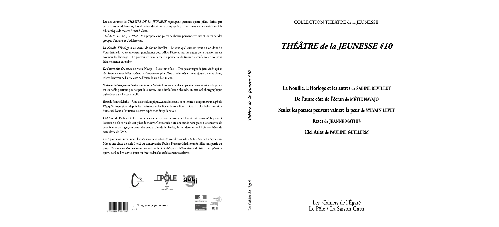
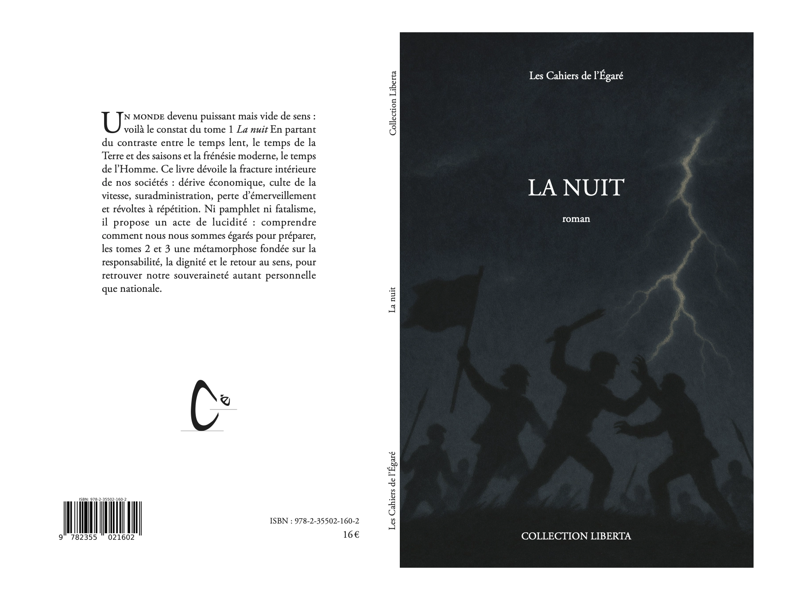
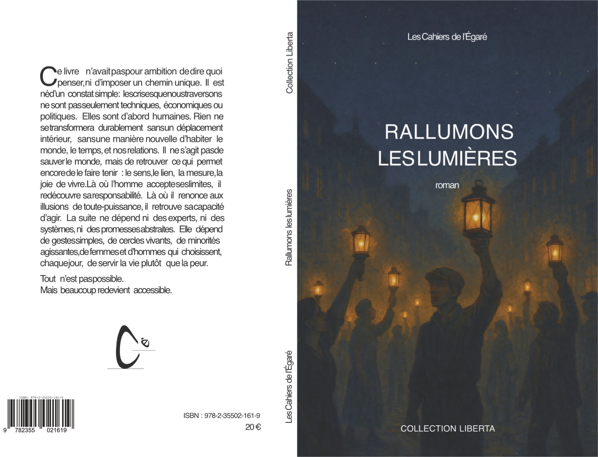
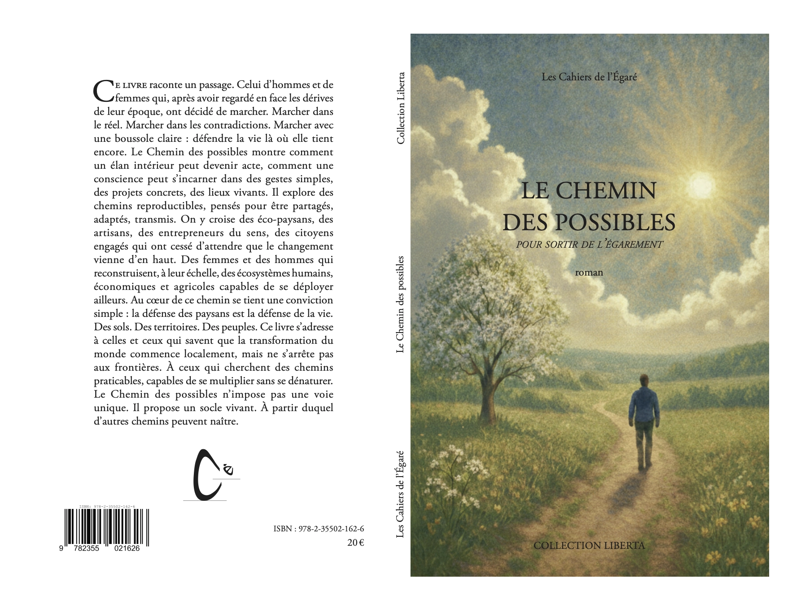
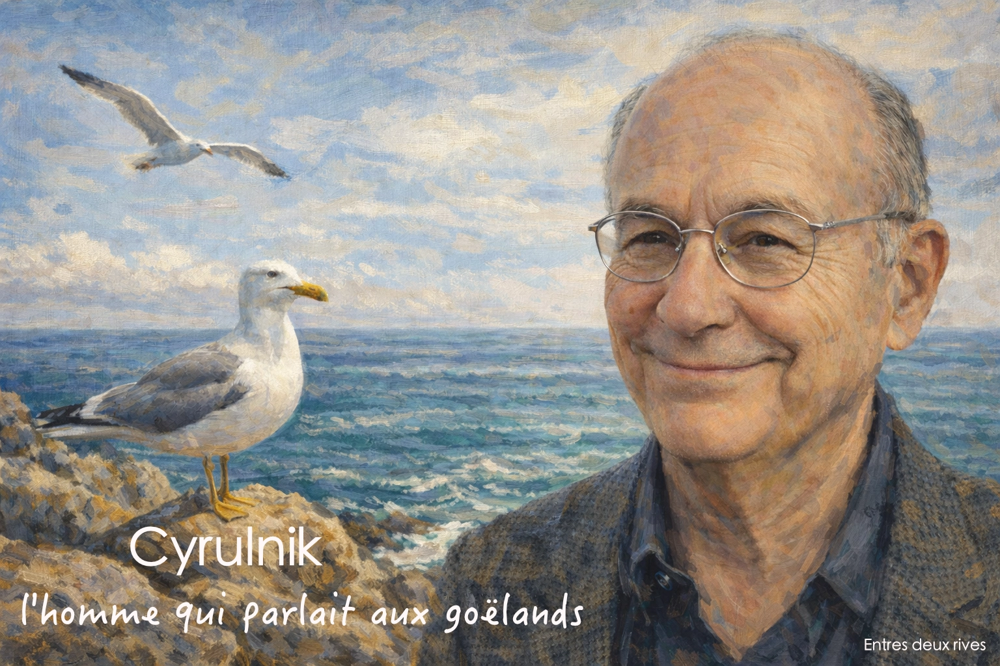
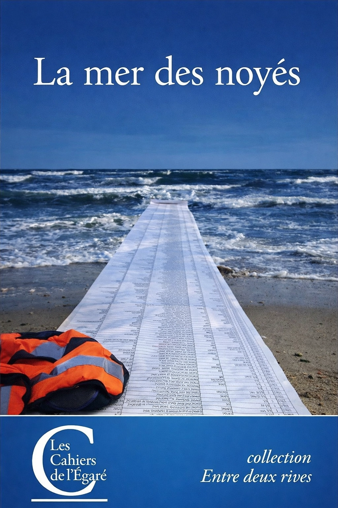

Vous ne saurez jamais ce qui se cache sous mes paupières...
- Homme de maturation lente, je suis dépassé par les énervés.
Lourds de leur légèreté, sourds aux nécessaires solidarités, ils osent.
Croyant être au coeur des choses quand ils ne sont qu'au bord.
N'est-on pas toujours au bord des choses ?
Peut-être même est-on toujours à côté ?
Alors qu'on croyait avoir bien visé, bien ciblé !
Sait-on seulement ce qu'on dérange quand on avance ?
Ce qu'on détruit quand on bouge ?
- Dans la non-voie, il n’y a plus ni archer, ni arc, ni flèche, ni même de tir
Théâtre de la Jeunesse #10
Sous la responsabilité de Cyrille Elslander, directeur du Pôle et de la Bibliothèque Armand Gatti

Préface à Théâtre de la Jeunesse#10, paru le 1° juin 2025
« Nous avons l’art pour ne pas mourir de la vérité, » déclare Nietzsche dans La naissance de la tragédie, et le théâtre est cet espace fragile et nécessaire où l’on s’échappe du monde pour mieux y revenir.
C’est là qu’on se réinvente, qu’on déplace les murs, qu’on interroge les règles même celles que l’on croyait immuables. C’est là que l’on se glisse dans les habits d’un ou d’une autre pour apprendre à mieux être soi.
Dix ans que les enfants de La Seyne-sur-Mer, avec la complicité des dramaturges en résidence, construisent ce territoire commun et ouvrent ces espaces de dialogue et de créativité. Dix ans de textes qui osent dire, rêver, déranger, décaler. Dix ans d’une jeunesse qui pense, qui débat, qui s’amuse et qui écrit.
Cette année encore, alors que les statistiques voudraient nous voir désespérer, leurs voix s’élèvent et nous emportent loin : dans les confins d’un jeu vidéo où les personnages veulent passer de l’autre côté de l’écran ; dans les couloirs d’une société où la liberté est dissoute dans des gélules ; dans une parade de patates en rébellion joyeuse ; dans une classe où quatre enfants venus du monde entier deviennent les héros d’un quotidien enrichi de leur rencontre ; ou encore dans un groupe d’élèves qui, face aux surnoms qui collent à la peau, trouve la force de transformer la moquerie par le pouvoir de l’amitié.
Ce recueil est le fruit de tout un chemin d’éducation artistique et culturelle : la lecture de textes contemporains, les rencontres avec les artistes, l’invention de personnages et de dialogues, l’émotion du plateau, la confrontation à la scène et la rencontre du public. Chaque pièce est une aventure, chaque mot posé un acte, et ce recueil en est la trace, la mémoire.
Je remercie chaleureusement les autrices Sabine Revillet, Métie Navajo, Jeanne Mathis et Pauline Guillerm et l’auteur Sylvain Levey, pour leur engagement auprès des enfants, ainsi que les enseignantes, enseignants, les comédiennes, comédiens et les partenaires qui permettent à ce projet de grandir, année après année.
Et surtout, merci aux jeunes écrivaines et écrivains d’avoir partagé leurs rêves, leurs colères, leurs mondes.
Dix ans c’est l’âge de la plupart de ces élèves de CM2, qui nous font encore une fois regarder le monde à hauteur d’enfant.
Dix ans, c’est peu. Dix ans, c’est beaucoup.
Dix ans, c’est une promesse tenue et à renouveler.
Cyrille Elslander
Directeur du Pôle et de la Bibliothèque de théâtre Armand Gatti
Le mot de l’éditeur
Les trois romans présentés par la collection Liberta se distinguent par une singularité rare : ils sont le fruit d’un travail collectif où chaque auteur a volontairement renoncé à toute mise en avant personnelle. Réunis sous la collection Liberta, émanation de l’Institut du même nom, ils portent une conviction commune : le culte de la personnalité, devenu central dans nos sociétés, participe largement à leurs déséquilibres.
Anthropologues, chefs d’entreprise, responsables politiques : tous ont choisi ici de déplacer le centre de gravité, non plus vers eux-mêmes, mais vers une œuvre destinée à nourrir la conscience collective. Cette posture n’est pas un effacement, mais un choix stratégique et exigeant : celui de faire primer le sens sur la signature.
Ces trois romans s’ancrent dans le vécu de leurs personnages. Ils partent d’une réalité parfois brute, parfois dérangeante — cette réalité qui, souvent, laisse indifférent tant elle est nue. Mais les auteurs ne s’y arrêtent pas. Ils montrent qu’au-delà de la vérité existe une force plus profonde : celle qui pousse l’homme à la chercher, à s’y confronter, et parfois à la dépasser.
C’est ici que s’introduit la notion de nécessité. Non pas comme une contrainte écrasante, mais comme un moteur intérieur. Une tension féconde qui rappelle que le pire n’est jamais certain, et que l’espérance demeure une possibilité réelle.
L’une des réussites majeures de ces ouvrages réside précisément dans cette articulation délicate : faire coexister la vérité et l’espérance, sans jamais les simplifier ni les opposer. Un exercice rare, sans doute parmi les plus exigeants — et les plus profondément humains.
Car tout l’enjeu est là : ne pas renoncer à la lucidité, sans renoncer à l’espérance.
La nécessité n’est pas au-dessus de la vérité. Elle est ce qui pousse l’homme à la chercher — et parfois à la transformer.



Entre deux Rives
Sous la responsabilité de José Lenzini, elle pourrait se présenter sous forme de petits livres (format 11x17) courts et denses en informations et découvertes, tout en étant de lecture rapide.
Entre deux rives serait un lieu de découvertes d’hommes ou de femmes et d’évocations, de réalités (culturelles, sociales, politiques, mythologiques) inattendues car peu ou mal connues et ouvrant sur des réflexions élargies.
Ces ouvrages pourraient être traités par des spécialistes et/ou à partir d’interviews (que je peux réaliser) remises en forme et rewritées avec Cyrulnik, Boualem Sansal, Daniel Herrero ou Rudy Ricciotti. Ce qui rendrait leur réalisation beaucoup plus courte et dynamique
à paraitre en novembre 2026

